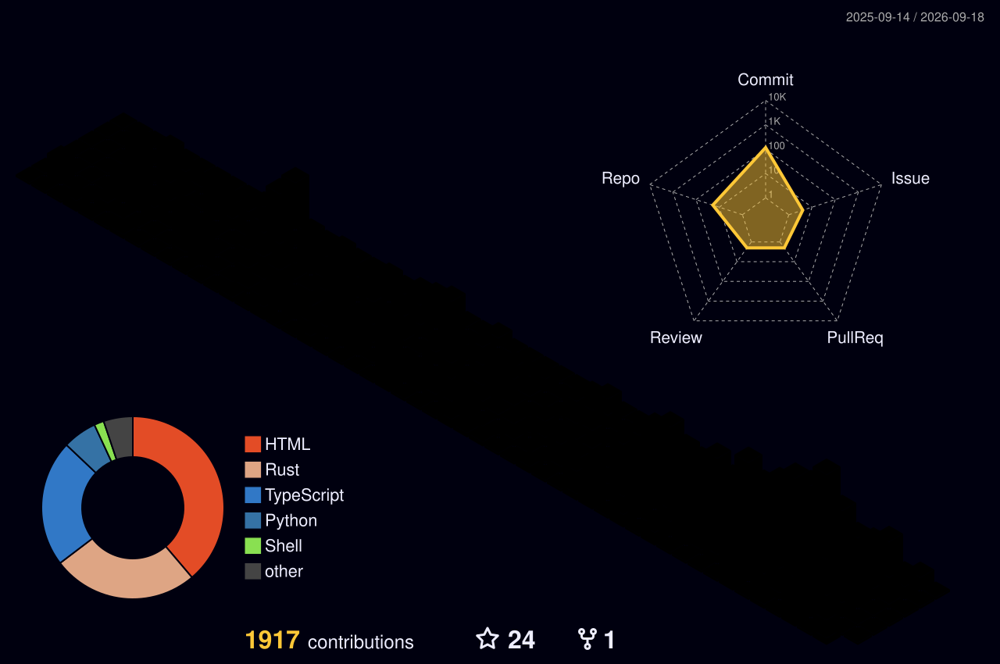

Rust
rust-clipboard-uploader
剪贴板图片上传工具的 Rust 版本，用更轻的运行时解决高频截图、上传、转链工作流。
View repoFull-stack Developer / Open Source Builder
我把日常开发中的真实问题做成工具：自动化、AI API 转换、视频下载、SQL 调试、桌面效率和 Web 服务。

Selected Work
从系统工具到 AI 接口，从 Web 应用到移动端实验，项目更偏向能落地、能复用、能解决具体问题。
剪贴板图片上传工具的 Rust 版本，用更轻的运行时解决高频截图、上传、转链工作流。
View repo带 Web 界面的智能视频下载器，支持资源检测、M3U8/MP4 下载、实时进度和 REST API。
AWS Claude API 到 OpenAI API 格式的转换层，让支持 OpenAI 协议的工具接入 Claude 模型。
View repoWindows 剪贴板图片自动上传工具，监听图片变化并自动上传到指定服务器，提高写作和协作效率。
View repoMyBatis XML SQL 入参模拟与执行工具，专注快速复现 SQL 映射问题和调试动态 SQL。
View repo让 Windows 环境变量管理接近 Linux export 体验的 PowerShell 工具，面向命令行高频用户。
View repo基于 StackEdit 的个人优化版本，面向 Markdown 写作、笔记同步和浏览器端编辑场景。
Python API 服务项目，用于快速沉淀接口能力和后端实验，已部署到 Vercel。
Android 蓝牙广播应用，覆盖 APK 分享、5G Wi-Fi 支持检测和蓝牙连接信息读取。
View repoTech Surface
主线是 Java / Python / Go / JavaScript / TypeScript，辅助覆盖 Rust、Shell、PowerShell、Vue 和云平台。
围绕剪贴板、环境变量、签到、上传和工作区脚本，把重复操作变成工具链。
做过 Claude/OpenAI 协议转换、语音助手、代理服务和多端 API 实验。
熟悉静态站、Vercel、Cloudflare、后端接口、音乐/视频服务和评论系统整合。
持续维护数据结构、算法、SQL、Spring 与 Java 工程化练习。
Proof
作品集不只看项目数量，也看持续投入、基础能力和公开记录。

中国计算机技术职业资格，软考中级。

全国计算机等级考试三级数据库技术。

Message
项目合作、工具改进建议、技术问题都可以在这里留下。